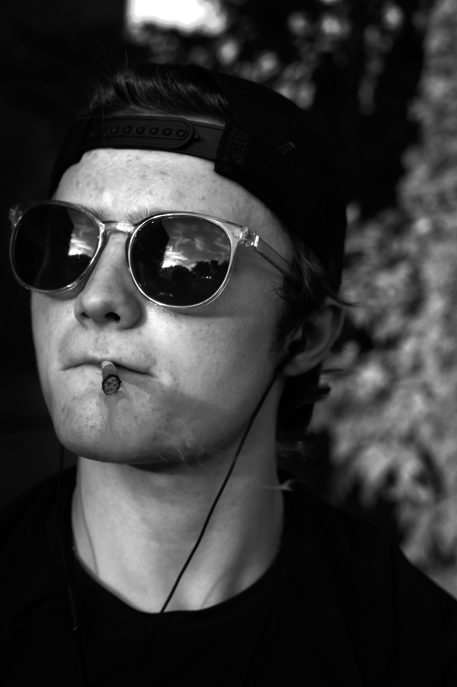

Until you make the unconscious conscious, it will direct your life and you will call it fate. -Carl Jung
I was diagnosed with a rare neurological disorder called Fredreichs ataxia (FA) a few months after my 9th birthday. I had little understanding at the time of the severity of the diagnosis and I felt I was tough enough to take whatever was thrown at me. When I was 11 it started clearly affecting my balance and falling was becoming more commonplace in day-to-day life. When I was 14, I was in high school and it had progressed to the point where I was falling painfully multiple times a day but I still rejected a wheelchair because I felt the importance of fighting FA, even though the school was requesting I do. A year later I was 15 and in grade 10 covid hit I lived with my grandparents and my grandpa was terminally ill, so my family took covid and quarantine very seriously. A few months into quarantine I was losing the ability to walk at all and started to use a wheelchair full-time, overall, I was in quarantine for 15 months, so I decided to go back to school for my senior year. It was terrifying to see everyone I grew up with as I was using a wheelchair full-time now (even though everyone knew about my disease already and didn’t care). It was actually not a big deal at all, I learned that your limitations, insecurities, and challenges are self-imposed and can be conquered with courage.
I’m Kaelan Carlson from the Ottawa valley in the west Carlton district. I grew up in a small town pretty rurally but my high school also bussed in about 35-40% of the students from Kanata and the city, that had a bit significance as there was kind of the lingering’s of a rivalry between the “city kid’s” and the “hick’s”. though I didn’t really care much and was well known and liked among both groups I identified myself as a “hick” and most of my go to friend’s were considered "hick’s".
I believe knowledge is a key factor in the infancy of any endeavor. as knowledge may take time to accumulate. But if you are putting in the work, you also accumulate confidence in your abilities over time. Effort is the deciding factor when trying to build anything (a business/or a house) it applies to both. If you truly believe in an idea, effort will come naturally. The outcome is a sort of mix of knowledge, effort, and competence. Competence meaning being able to roll with the punches, and how to problem solve when problems arise, whether that be common everyday issues or larger, more pressing problems. As a student for a few years now I’ve understood the importance of effort, accumulating knowledge, and how that applies to the outcome. A time when I experienced a disconnect between these elements was during and after my first year in the photography program at Algonquin College. I felt like I was an impostor my first year because I was young 17 I had been self-taught for the most part since I was 10 and I wasn’t putting in the effort to gain the knowledge, therefore I did not get an amazing outcome. In the summer after my first year, I fell into a rough depression as I felt I had not learned anything and I skated by with the 60s, but I knew I was not putting in the effort Which made me feel as though I did not deserve to make it through. During my second year in photography, I put the effort in and realized I had gained a ton of knowledge from my first year. It just was not clear at that time.